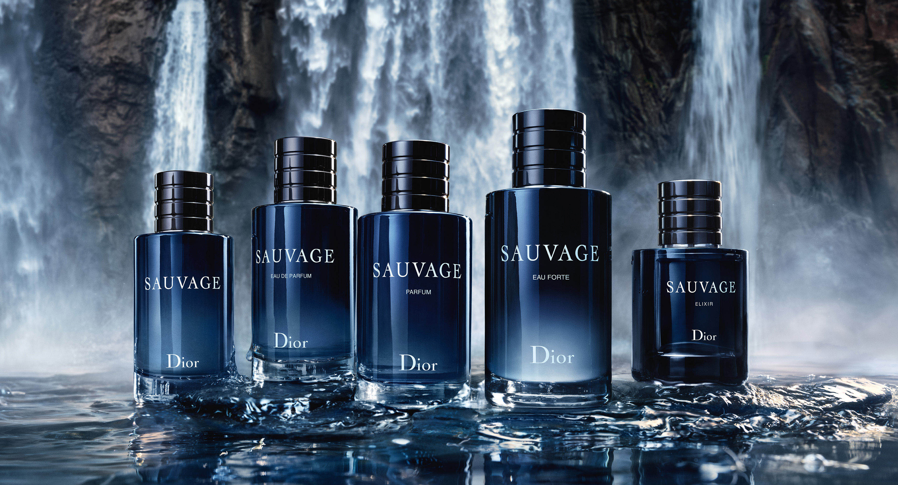
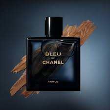
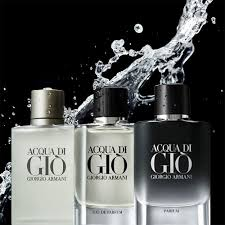
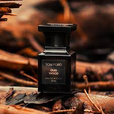

| Product Name | Product Image | Price | Description | Availability |
|---|---|---|---|---|
| Dior Sauvage |  | 22,600 | These Dior Sauvage cheap alternatives capture the essence of the original,allowing you to enjoy its luxury and sophistication without overspending. | out of stock |
| Bleu de Chanel |  | 19,500 | Bleu de Chanel is a sophisticated aromatic-woody fragrance for men, embodying masculine freedom and a captivating trail | |
| Giorgio Armani Acqua di Gio |  | 6,200 | ACQUA DI GIÒ is defined by its signature marine notes, a blend that has established the fresh fragrance as a classic in the scope of men's cologne | in stock |
| Tom Ford Oud Wood |  | 13,600 | Tom Ford Oud Wood, launched in 2007, is a luxurious woody oriental fragrance for both men and women. It opens with warm notes of cardamom, Brazilian rosewood, and Sichuan pepper, creating a complex and captivating impression. |